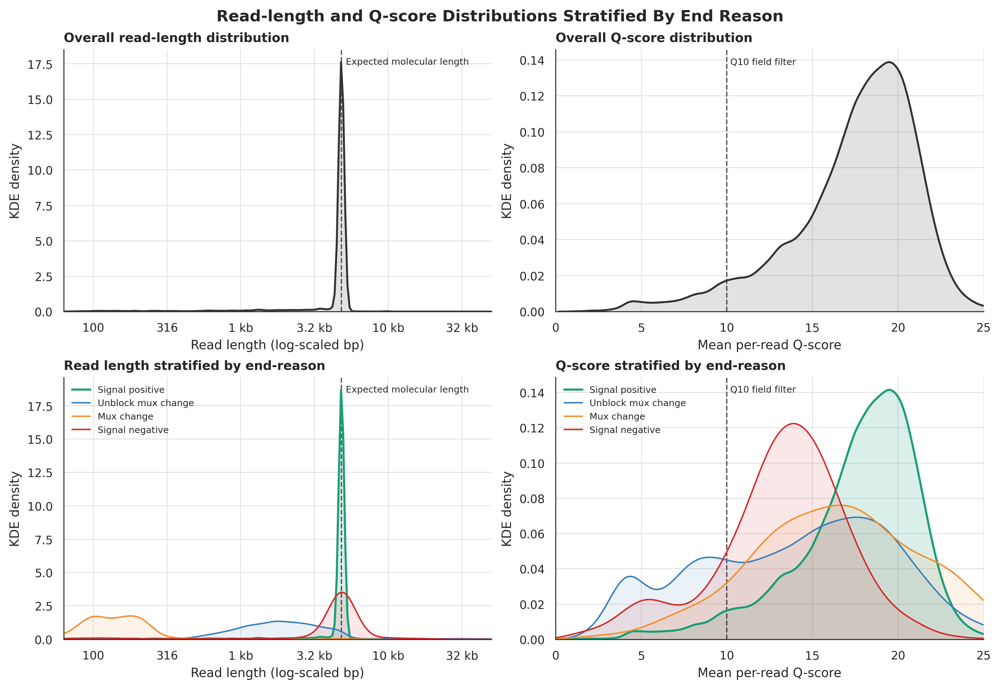

fig3_real_distributionsdraftRead-length and Q-score KDEs stratified by POD5-derived end_reason across three proof-of-principle cohorts.
↻
⚠ awaiting reviewer sign-off
adopted: rendered Figure 3 distributions · 2026-06-11 17:59:56